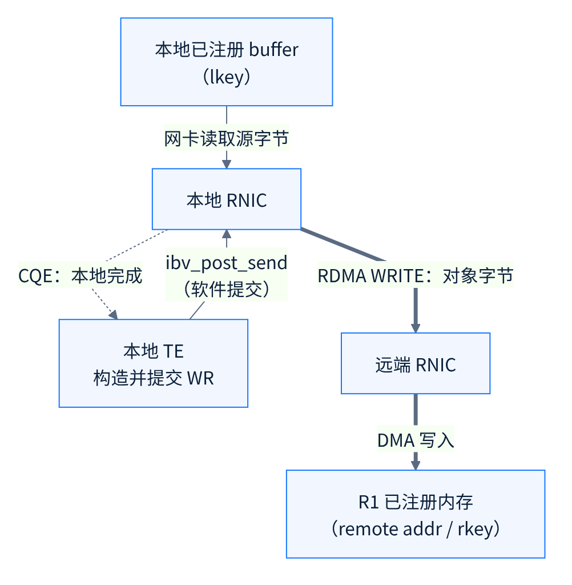

摘要：A 把主机内存里的 KV 写到远端 R1。沿着一次 WRITE 看源 buffer、目标 buffer、WR 提交与本地完成观察。
A 算完一段前缀 KV，准备把它写入 R1。源数据在 A 的主机内存里，目标 R1 在另一台机器的 Store Segment 中，两端都通过 RDMA 访问。
这一篇只跟这一条主机内存到远端已注册内存的 WRITE 路径，回答四个问题：源和目标的 buffer 在哪里，哪些准备可以复用，谁提交这次搬运，谁观察本地完成。
源 buffer 和目标 buffer 在哪里
源 buffer 是 A 进程里的一段主机内存。它必须先注册，网卡才能按 RDMA 语义访问。
目标 buffer 不是远端 TE 进程里的一个临时变量，而是 R1 所在 Store Segment 中的一段已注册内存。A 拿到的副本描述包含远端地址和访问凭据，用来告诉本地 RNIC：把字节写到哪个远端地址。
普通指针只对进程的软件逻辑有意义。RDMA 还需要内存注册等准备工作，让网卡能够按规定访问相应范围。遇到地址相关错误时，不能只检查"指针是不是非空"，还要看这段范围是否已注册、使用了哪张网卡，以及描述是否仍然有效。
准备阶段：注册与连接可以复用
远端信息需要通过配置的元数据与握手机制交换。QP 也需要完成相应状态转换，才能执行后续数据操作。
这些准备通常可以复用。不能把每个数据请求都理解成重新注册内存、重新建立全部连接。对于同一个 Segment 和同一组 QP，后续请求主要是在已有连接上提交新的 WR。

图注：准备阶段由两端 TE 参与；交换的是 Segment、远端地址与访问凭据。同一 Segment 与同一组 QP 的准备可以复用，不必为每个请求重新注册或建连。
提交：本地 TE 把 slice 变成 WR
WR 描述希望网卡执行的工作。在这条固定路径上，RdmaEndPoint::submitPostSend 为每个 slice 构造一个 ibv_send_wr：
opcode为IBV_WR_RDMA_WRITE；send_flags为IBV_SEND_SIGNALED；sg_list指向 A 的本地已注册 buffer，携带lkey；wr.rdma.remote_addr与rkey指向 R1 的远端已注册内存；- 最后调用
ibv_post_send。
这是软件提交 WR 的控制动作；真正搬字节的是本地 RNIC 到远端 RNIC 的 RDMA WRITE，远端 TE 软件不在数据路径上逐次接收这些字节。
对象字节最终落在 R1 的远端内存里，而不是落在远端 TE 的某个应用缓冲区里。这个区别决定了后面"传输完成"能证明什么、不能证明什么。
完成：本地 worker 从 CQ 观察
完成侧由本地 WorkerPool 的 worker 调用 context_.poll 读取 ibv_wc，用 wr_id 找回 Slice*；wc.status 成功时调用 slice->markSuccess()，失败时调用 markFailed()。这两个函数再更新 task 的 slice 计数与 batch 完成状态。
一次 poll 最多取 64 个 CQE。即使每个 WR 都设置了 IBV_SEND_SIGNALED，上层看到的也是 CQE 批量回收后映射到 slice，再由 slice 聚合到 task，不意味着每个 WR 都由上层单独处理一个事件。
这里观察的是本地完成：本地 RNIC 已经回收这次 WRITE 的完成事件。远端应用是否已经处理这块内存，不在这个 CQE 的语义里。

图注：软件提交发生在本地 TE 到本地 RNIC；对象字节经 RDMA WRITE 到达远端 RNIC，再 DMA 写入 R1。CQE 只表示本地完成；副本可见性还要等 PutEnd（第3篇）。
这就形成一条流水线：
待发送片段 → 路径与连接检查 → WR 提交 → 网卡执行 → CQE 回收 → 上层状态更新。
如果不把这些阶段分开，很容易把"尚未提交""已经提交但未完成""完成事件未被处理"都看成同一种卡住。
QP 或 CQ 相关额度不足时，后端可能暂缓提交，让片段留在队列等待。这是背压，与连接失效或数据操作错误不同：前者需要等待资源，后者可能需要更换路径、重建连接或报告失败。
传输完成，不等于 Store 可见
RDMA 的完成结果属于传输层。它不能替代 Store 的对象提交。
ibv_post_send 成功，只表示 WR 被本地提交；CQE 成功，只表示本地观察到了这次 WRITE 的完成。这条路径的完成只表示字节到了 R1 的远端已注册内存。要用普通 Put 让读方查到副本，Client::Put 还需要调用 PutEnd，Master 把副本从 PROCESSING 翻成 COMPLETE；在此之前 GetReplicaList 不会返回它。
"零拷贝"也有范围
RDMA 可以减少传统网络栈中的部分 CPU 搬运，但应用是否存在 staging、GPU 与主机之间是否复制，取决于整条路径。
讨论这条 WRITE 路径的性能时，应说明省掉的是哪一次拷贝，而不是把"用了 RDMA"当成全路径没有拷贝的证明。
下一篇讨论另一组影响传输效率的条件：多网卡与 NUMA 拓扑。
源码延伸：原系列篇6；RDMA transport、endpoint、worker pool、WR/CQE 处理。版本基线为 v0.3.13.post1。